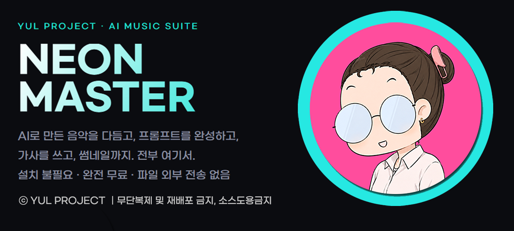

📋 최신 개발일지
불러오는 중...
🎵 최신 디스코그라피
불러오는 중...
음악 스타일 프롬프트
장르 · 보컬 · 분위기 · 악기 · BPM → Suno 복사
장르
🔰 용어 설명
국가·지역 장르
스타일·형식 장르
메인 장르를 바로 누르거나, 아래 계열을 펼쳐 고르세요. (복수 선택)
전체 장르 검색 (787종)
분위기
보컬
성별·구성
연령
장르톤
목소리톤
템포 (BPM)
노래 길이
악기
🔰 용어 설명
단독 (솔로)
세션 (합주)
시대 · 질감
시대
질감
가사 언어
메인 언어
서브 언어
추가 키워드
완성된 스타일 프롬프트
—
Suno의 'Style of Music' 칸에 붙여넣으세요.
가사 구조 빌더
구조 태그 · 창법 설정 → AI 요청문 자동 생성
1 · 음악 스타일 프롬프트
🔰 처음이세요? — 구조 용어 풀이
인트로 (Intro) · 곡의 도입부. 분위기를 잡아주는 짧은 시작입니다.
벌스 (Verse) · 이야기를 풀어가는 본문. 보통 후렴 앞에 옵니다.
프리코러스 (Pre-Chorus) · 벌스에서 후렴으로 넘어가기 직전, 긴장을 끌어올리는 다리입니다.
코러스·후렴 (Chorus) · 가장 강하고 반복되는 핵심. 제목이 들어가기도 합니다.
포스트코러스 (Post-Chorus) · 후렴 바로 뒤에 붙는 짧은 꼬리. 중독성을 더합니다.
브릿지 (Bridge) · 곡 후반의 전환 구간. 분위기를 바꿔 환기시킵니다.
훅 (Hook) · 귀에 딱 꽂히는 짧은 반복 구절. 후렴보다 더 짧고 강렬할 수 있습니다.
간주 (Instrumental) · 보컬 없이 악기만 나오는 구간입니다.
하이라이트 후렴 (Highlight) · 마지막에 가장 크게 터뜨리는 절정의 후렴입니다.
아웃트로 (Outro) · 곡을 마무리하는 끝부분입니다.
2 · 구조 템플릿
원하는 걸 선택하시면 세부 선택사항이 나옵니다.
버튼을 누를 때마다 아래 구조에 차곡차곡 쌓입니다.
3 · 구조 & 창법
각 구획 오른쪽 칸에 창법만 적으세요. 예: 잔잔하게 노래 / 파워풀하게 / 랩. 가사는 아래 AI가 채워 줍니다.
썸네일 프롬프트
곡 분위기·가사 연동 → 이미지 AI 프롬프트
🎵 음악에서 가져오기
버튼을 누르면 곡의 분위기·키워드·가사를 끌어와 이미지 프롬프트에 자동으로 반영합니다. 가사는 그림 안에 글자로 넣지 않고, AI가 곡을 이해하도록 돕는 참고용입니다.
용도 · 비율
주제 · 대상
그림 스타일
🔰 용어 설명 (생소한 스타일)
분위기 · 조명
🔰 용어 설명 (생소한 표현)
색감
🔰 용어 설명 (생소한 표현)
구도
🔰 용어 설명 (생소한 표현)
추가 키워드
제외할 요소 (네거티브)
기본값 뜻: low quality 저화질, blurry 흐릿함, distorted 일그러짐, watermark 워터마크, text 글자, extra fingers 손가락이 더 생기는 현상 — AI 그림에서 흔한 오류라 미리 막아두는 것입니다. 빼거나 더하셔도 됩니다.
완성된 이미지 프롬프트
비율 16:9
Midjourney·DALL·E·Stable Diffusion 등 이미지 생성 도구의 프롬프트 칸에 붙여넣으세요. 네거티브 프롬프트 칸이 따로 있는 도구라면 아래 '제외할 요소'를 그쪽에 넣으면 됩니다.
AUTO — AI 선택 & API 설정
사용할 AI를 고르고 API 키를 등록하세요
API 키는 이 기기(브라우저)에만 저장됩니다. 서버로 전송되거나 외부에 저장되지 않습니다.
AI 선택
🟢
ChatGPT
GPT-4o · OpenAI
중간 비용🔵
Gemini
Flash 1.5 · Google
저렴🟠
Claude
Sonnet 4 · Anthropic
비싼 편🟣
Copilot
GPT-4o · Microsoft
중간 비용ChatGPT API 키 (OpenAI)
AUTO 실행
주제 입력 → 가사 + 프롬프트 자동 완성
🤖
개발 중입니다
API 설정 완료 후 사용 가능합니다.
썸네일 자동화 SOON
음악·가사 연동 → 썸네일 이미지 자동 완성
🤖
개발 중입니다
API 설정 완료 후 사용 가능합니다.
개발일지
업데이트 안내 · 공지사항
불러오는 중...
디스코그라피
YUL PROJECT 음원 발매 내역
불러오는 중...
믹싱 작업
다중 트랙 볼륨 · 팬 · 페이드 · 믹스다운
🔰 처음이세요? — 5분이면 이해됩니다
이 기능이 하는 일 · 보컬·드럼·베이스·기타 같은 개별 트랙 파일들을 한 곡으로 합쳐주는 작업입니다. 각 트랙의 크기(볼륨)와 좌우 위치(팬)를 따로 조절한 뒤, 하나의 음악 파일로 내보낼 수 있습니다.
🔊 볼륨 · 트랙 하나하나의 소리 크기입니다. 보컬은 좀 더 키우고, 배경 악기는 줄이는 식으로 균형을 맞추면 됩니다. 100%가 원래 크기입니다.
↔️ 팬(Pan) · 소리가 왼쪽 귀(L)와 오른쪽 귀(R) 중 어디서 더 크게 들릴지 정합니다. 가운데(C)가 기본값이고, 기타를 살짝 왼쪽으로 빼고 싶다면 L 쪽으로 옮기면 됩니다.
M (음소거) / S (솔로) · M을 누르면 그 트랙만 안 들리게 끕니다. S를 누르면 그 트랙만 들리고 나머지는 전부 꺼집니다 — 특정 트랙만 따로 확인할 때 유용합니다.
페이드인 / 페이드아웃 · 곡이 시작할 때 서서히 커지거나, 끝날 때 서서히 작아지게 만드는 효과입니다. 트랙별이 아니라 다 합쳐진 최종 결과물에 적용되며, 저장하기 직전 화면 하단에서 초 단위로 입력하면 됩니다. 0이면 효과가 적용되지 않습니다.
사용 순서 · ① 트랙 파일들을 한 번에 끌어다 놓으세요 → ② 각 트랙의 파형을 보면서 볼륨·팬을 조절하세요 → ③ 재생 버튼으로 전체를 함께 들어보며 밸런스를 확인하세요 → ④ 필요하면 전체 페이드인/아웃을 입력하세요 → ⑤ WAV 또는 MP3로 저장하세요.
🎵
클릭하거나 트랙 파일들을 끌어다 놓으세요
보컬·드럼·베이스·기타 등 여러 트랙을 한 번에 선택 (WAV·MP3 등)
아직 추가된 트랙이 없습니다.
0개 트랙
모든 트랙의 볼륨·팬·뮤트·솔로 설정을 반영해 하나로 합친 뒤, 아래 페이드를 최종본에 적용합니다.
후처리 작업
히스 · 험 · 럼블 노이즈 완화
🔰 처음이세요? — 5분이면 이해됩니다
이 기능이 하는 일 · 녹음할 때 섞여 들어간 거슬리는 잡음 3종을 줄여줍니다. 음악 자체를 바꾸는 게 아니라, 배경에 깔린 노이즈만 골라서 줄이는 작업입니다.
🌀 럼블 노이즈 · "웅—" 하는 낮고 둔탁한 소리. 에어컨·선풍기 소음, 마이크 스탠드 진동, 바람 소리가 마이크에 들어갔을 때 생깁니다. 잘 모르겠으면 기본값(45Hz)을 그대로 두셔도 됩니다.
⚡ 험 노이즈 · "지~잉" 하는 일정한 전자음. 콘센트·어댑터·형광등 같은 전자기기 옆에서 녹음하면 자주 섞입니다. 한국은 보통 60Hz 기준이면 됩니다.
💨 히스 노이즈 · "쉬이익~" 하는 가는 노이즈. 저가형 마이크, 오래된 녹음 장비, 게인을 너무 올렸을 때 생기는 배경잡음입니다. 강도를 너무 높이면 목소리도 같이 흐려질 수 있으니, 결과를 들어보면서 조절하세요.
사용 순서 · ① 아래에 파일을 올리면 파형이 보입니다 → ② 필요한 항목만 켜둔 채로(기본은 전부 켜짐) → ③ '노이즈 완화 처리' 클릭 → ④ 원본과 결과를 비교해서 들어보고 → ⑤ 만족스러우면 저장하세요.
🎵
클릭하거나 파일을 끌어다 놓으세요
WAV · MP3 · FLAC 등 오디오 파일 1개
원본 파형
럼블 노이즈 완화
저주파 웅웅거림 · 진동 · 바람 소리 (40Hz 이하)
45Hz
험 노이즈 완화
전원·전자기기 간섭음 (60Hz 및 배음 / 50Hz 계열)
히스 노이즈 완화
고주파 쉬익거림 · 녹음 잡음 · 테이프 노이즈
65%
처리 결과 파형 (원본과 비교해 보세요)
처리 완료
처리 결과를 들어보고 만족스러우면 내보내기 하세요.
마스터링 작업
EQ · 컴프 · 라우드니스 정규화 · 내보내기
업로드한 음원은 서버로 전송되지 않으며, 모든 처리는 이 브라우저 안에서만 이루어집니다.
1
음원 넣기
파일을 끌어다 놓거나 눌러서 선택
2
목적 고르기
원하는 느낌을 한 번 누르면 끝
3
마스터링 누르기
큰 버튼 한 번이면 자동 처리
4
저장하기
WAV 파일로 내려받기
용어 쉽게 보기 (처음이세요?)
마스터링 — 완성된 곡의 음량과 음색을 다듬어, 다른 노래들과 비슷한 크기로 또렷하게 들리게 하는 마지막 작업입니다.
프리셋 — 미리 맞춰둔 설정 모음입니다. 어려운 조정 없이 이름만 보고 누르시면 됩니다.
라우드니스 (LUFS) — 사람이 느끼는 소리 크기입니다. 유튜브·스트리밍은 보통 −14 정도로 맞춥니다.
EQ (이퀄라이저) — 저음·중음·고음의 균형입니다. 너무 둔하거나 날카로운 소리를 다듬습니다.
컴프레서 — 큰 소리와 작은 소리의 차이를 줄여, 전체를 고르고 안정적으로 만들어 줍니다.
리미터 · 출력 천장 — 소리가 깨지지 않도록 최대 음량에 안전한 한계를 둡니다.
원본 / 마스터 — 작업 전과 후를 번갈아 들어 비교하는 버튼입니다.
처음에는 어려운 설정을 건드리지 않으셔도 됩니다. 프리셋만 고르고 마스터링을 누르면 충분히 좋은 결과가 나옵니다.
📱 모바일에서도 동작하지만, 긴 곡(4분 이상) 처리 시 속도가 느리거나 탭이 멈출 수 있습니다. 가능하면 PC 브라우저(Chrome·Edge·Safari) 사용을 권장합니다.
음원 파일을 여기에 끌어다 놓으세요
또는 클릭하여 파일을 선택합니다 (여러 곡 한 번에 가능)
WAV · MP3 · FLAC · M4A · OGG 지원 / 파일은 외부로 전송되지 않습니다
—
측정값
원본 라우드니스 (LUFS)
—LUFS
마스터 라우드니스 (LUFS)
—LUFS
원본 피크
—dBFS
마스터 피크 · 적용 게인
—dBFS
목적 고르기
원하는 느낌을 하나만 누르세요. 어려운 설정은 자동으로 맞춰집니다.
🎛 세부 조정 (고급) — 안 만지셔도 괜찮아요
세부 프리셋 (선택)
필터 & EQ
다이내믹스 (컴프레서)
스테레오 & 라우드니스
들어보기 (원본 ↔ 마스터)
00:00 / 00:00
저장
처리 순서: 하이패스 → 3밴드 EQ → 컴프레서 → 스테레오 폭 → 라우드니스 정규화 → 리미터(천장 보호).
라우드니스는 ITU-R BS.1770 게이팅 방식의 K-가중 적분 라우드니스로 측정합니다.
라우드니스는 ITU-R BS.1770 게이팅 방식의 K-가중 적분 라우드니스로 측정합니다.
업로드한 곡 (0곡)
목적을 고른 뒤 전체 마스터링 버튼을 누르면 순차 처리됩니다. 곡을 누르면 해당 곡 상세가 아래에 표시됩니다.
목적 고르기
올린 곡 전체에 적용됩니다. 하나만 누르세요.
🎛 세부 조정 (고급) — 안 만지셔도 괜찮아요
세부 프리셋 (선택)
필터 & EQ
다이내믹스 (컴프레서)
스테레오 & 라우드니스
저장할 곡 선택
처리 순서: 하이패스 → 3밴드 EQ → 컴프레서 → 스테레오 폭 → 라우드니스 정규화 → 리미터(천장 보호).
라우드니스는 ITU-R BS.1770 게이팅 방식의 K-가중 적분 라우드니스로 측정합니다.
라우드니스는 ITU-R BS.1770 게이팅 방식의 K-가중 적분 라우드니스로 측정합니다.
가이드북
NEON MASTER 사용 설명서 · 2026 Edition
장르 레퍼런스
장르 이름 · 한글 설명 사전
사용량 대시보드
AI별 토큰 · 과금 현황
📊
개발 중입니다
FAQ
자주 묻는 질문
❓ 자주 묻는 질문
NEON MASTER를 쓰면서 자주 나오는 질문을 모았습니다. 궁금한 항목을 눌러 보세요.
내 음원·가사 파일이 외부로 전송되나요?
아니요. 모든 처리는 여러분의 브라우저 안에서만 이루어집니다. 음원 · 가사 · 이미지 어떤 것도 외부 서버로 전송되거나 저장되지 않습니다. 인터넷이 끊긴 상태에서도 믹싱 · 후처리 · 마스터링이 동작합니다.
완전 무료인가요?
네. 설치 · 가입 · 결제 없이 무료로 쓸 수 있습니다. 도움이 되셨다면 사이드바 하단의 후원 버튼으로 응원해 주시면 큰 힘이 됩니다.
어떤 음원 형식을 넣을 수 있나요?
WAV · MP3 · FLAC · M4A · OGG 등 일반적인 오디오 형식을 불러올 수 있습니다. 마스터링 결과는 MP3 · FLAC · WAV(16bit/24bit) 중 원하는 형식으로 저장할 수 있습니다.
여러 곡을 한 번에 처리할 수 있나요?
네. 마스터링 탭에서 음원을 여러 개 올린 뒤 목적(유튜브 · 스트리밍용 등)을 하나 고르고 "전체 마스터링 하기"를 누르면, 올린 곡 전체가 같은 설정으로 순차 처리되고 각각 개별 파일로 저장됩니다.
마스터링은 무엇을 해주나요?
음량(LUFS)을 스트리밍 기준에 맞추고, 톤(EQ) · 컴프레서 · 리미터로 소리를 다듬어 줍니다. 어려운 설정을 몰라도 목적만 고르면 알맞은 값이 자동으로 적용됩니다.
믹싱과 후처리는 마스터링과 뭐가 다른가요?
믹싱은 보컬 · 드럼 · 베이스처럼 여러 트랙 파일을 하나로 합치는 작업이고, 후처리는 히스 · 험 · 럼블 같은 잡음을 줄이는 작업이며, 마스터링은 음압과 음색을 다듬어 최종 음질을 완성하는 작업입니다. 트랙이 여러 개이거나 잡음이 있을 때만 믹싱 · 후처리를 거치고, 그 외에는 마스터링만 해도 충분합니다.
가사 · 스타일 · 썸네일 프롬프트는 어떻게 쓰나요?
항목을 고르기만 하면 Suno나 이미지 생성 AI에 그대로 붙여넣을 프롬프트가 자동으로 완성됩니다. 가사는 구조 · 창법만 정해 AI에게 작성을 맡기거나 직접 입력할 수 있고, 썸네일은 곡의 스타일 · 가사를 끌어와 어울리는 이미지 프롬프트를 만들어 줍니다.
휴대폰에서도 되나요?
됩니다. 다만 긴 곡(4분 이상)의 마스터링이나 믹싱은 처리 속도 때문에 PC 브라우저(크롬 · 엣지 · 사파리)를 권장합니다.
앱으로 설치할 수 있나요?
네. 브라우저의 "홈 화면에 추가" 또는 "설치"를 누르면 앱처럼 아이콘으로 띄워 쓸 수 있습니다. 상단에 설치 버튼이 보이면 그걸 눌러도 됩니다.
다른 언어로 보고 싶어요.
크롬 · 엣지에서 페이지 빈 곳을 우클릭한 뒤 "번역"을 누르거나, 주소창의 번역 아이콘을 누르면 English · 日本語 등으로 페이지 전체가 자동 번역됩니다.
만든 결과물을 상업적으로 써도 되나요?
이 도구는 음원을 다듬고 프롬프트를 만들어 주는 역할만 합니다. 음원 · 가사 · 이미지의 저작권과 이용 범위는 각 생성 도구(Suno 등)와 사용하신 소스의 약관을 따라 주세요.
장르 레퍼런스나 가이드북은 어디서 보나요?
좌측 사이드바의 라이브러리 메뉴에서 확인할 수 있습니다. 장르 레퍼런스는 769종 장르 사전을, 가이드북은 빠른 시작 가이드와 상세 설명서 두 권을 제공합니다.